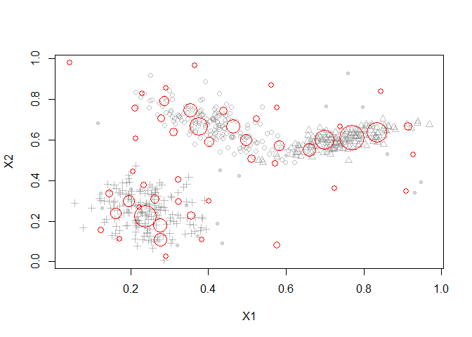
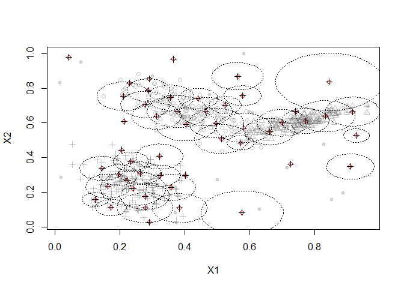
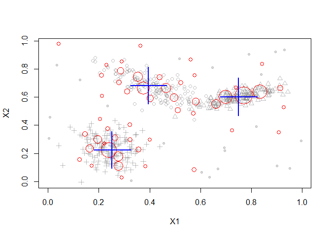
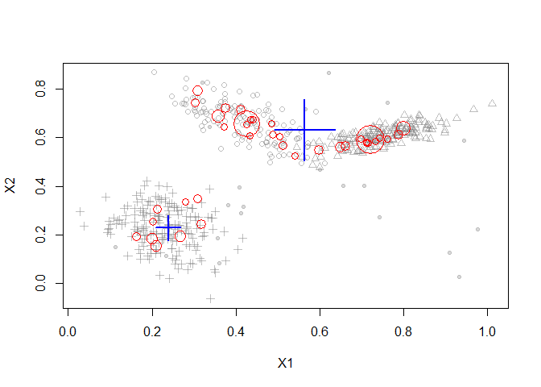

Stream Clustering Algorithms
Clustream vs Denstream
The Clustream algorithm assumes the clusters are spherical in nature, so it performs poorly when the clusters have arbitrary shapes. Denstream overcomes this limitation since it uses a version of DBSCAN as the offline clustering algorithm.
We are going to simulate a stream with 3 clusters consisting of 2-dimensional points.
Plotted below is a sample of 500 points from the stream. We can see that there are 2 natural clusters and they are not circular.
Clustream
After running the Clustream algorithm with 50 microclusters, the points are summarized with microclusters
library("streamMOA")
stream <- DSD_Gaussians(k=3, d=2, noise=0.05)
# cluster with CluStream
clustream <- DSC_CluStream(m=50)
update(clustream, stream, 500)
clustream
## CluStream
## Class: moa/clusterers/clustream/WithKmeans, DSC_Micro, DSC_MOA, DSC
## Number of micro-clusters: 50
## Number of macro-clusters: 5
# plot micro-clusters
plot(clustream, stream)

This plot shows the assignment area (radii) of the Micro-Clusters
# plot assignment area (micro-cluster radius)
plot(clustream, stream, assignment=TRUE, weights=FALSE)

In the offline phase, the following clusters are found by K-Means
# reclustering. Use weighted k-means for CluStream
kmeans <- DSC_Kmeans(k=3, weighted=TRUE)
recluster(kmeans, clustream)
plot(kmeans, stream, type="both")

Denstream
Now we will use Denstream to cluster the same set of points. We notice that Clustream has included a few outliers in its final clustering result, wheras Denstream has correctly removed outliers, and was also able to find arbitrary shaped clusters.
denstream <- DSC_DenStream(epsilon=0.05)
update(denstream, stream, 500)
plot(denstream, stream, type="both")
